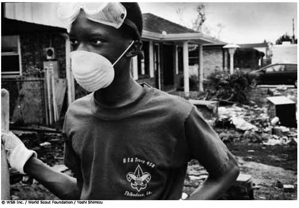

¡Preparados para el desastre!

Finalidad 5
Scouts trabajan por un mundo donde las personas están preparadas para responder a riesgos ambientales y desastres naturales.
Objetivos educativos: Ser capaz de reconocer diferentes tipos de riesgos ambientales y desastres naturales y explicar por qué ocurren. Demostrar cómo prepararnos y reaccionar ante riesgos ambientales y desastres naturales en la comunidad.Edad: Tropa
Resumen: Una actividad para crear un plan y equipo de respuesta a emergencias como preparción para desastres naturales.
Objetivo: Comprender por qué es importante preparase para los desastres naturales.
Materiales y equipo: Papel, bolígrafos, artículos del equipo de respuesta a emergencia (optativo), película del Movimiento Scout 'Desastres Naturales: Estarás preparado?' (optativa)
Preparación: Estudia la lista de equipo de emergencia adjunta.
Duración: Treinta minutos
Lugar: Lugar de reunión
Antecedentes: Los desastres naturales ocurren alrededor del mundo y pueden tener un efecto devastador en el ambiente y los seres humanos. Existen muchos tipos diferentes de desastres naturales, por ejemplo, huracanes, ciclones tropicales, tifones, tornados, sequías, inundaciones, erupciones volcánicas, deslizamientos, tsunamis, olas de calor, incendios forestales, plagas, hambrunas, epidemias, avalanchas y terremotos.
Es muy importante que entendamos los desastres naturales. El efecto de un desastre natural puede minimizarse en ocasiones con una preparación cuidadosa, reconocimiento de las señales de peligro (si se presentan) y conocimiento de qué hacer una vez que el desastre ocurre. Necesitamos estar preparados para responder cuando esto nos ocurra a nosotros y apoyar cuando le ocurra a otras personas.
Guía paso a paso de la actividad
1. Introduzca el tema de desastres naturales y averigue cuánto conocen los Scouts acerca del tema. ¿Qué desastres han afectado su comunidad o país? Qué desastres naturales han escuchado que afectan otros países? Cuáles desastres podrían afectarlos en el futuro?2. Una película corta se encuentra disponible en el sitio Web del Movimiento Scout (www.scout.org) para dar una introducción de cómo varios desastres naturales afectan a Scouts alrededor del mundo, o tenga a mano información de desastres naturales recientes para compartir con los Scout.
3. Los Scout deben moverse en el sitio, y hacer preguntas hasta que descubran cuál desastre natural son. El primer Scout que diga al dirigente la respuesta correcta, gana.
4. Permita que el juego continúe hasta que todos hayan identificado cuál desastre natural son.
Evaluación
1. Reúna a todo el grupo y muéstreles todas las diferentes fotografías de desastres naturales. Encuentre con cuáles imágenes se identifica el grupo y cuáles no les son familiares.
Actividades avanzadas
1. Elija unos cuantos ejemplos de desastres naturales y pida a los Scout que piensen cómo podrían prepararse para ellos.
2. Determine los desastres naturales que hayan ocurrido en su país y prepare información sobre lo que pasó, por qué pasó y cómo los servicios de emergencia actuaron al respecto.
3. Visiten una oficina de servicios de emergencia local, por ejemplo, el Departamento de Bomberos o la Estación de Policía e investiguen cómo trabajan ellos durante situaciones de emergencia. Descubra si ellos han ayudado en situaciones de desastres naturales.
4. Practiquen primeros auxilios básicos y cómo obtener ayuda durante una emergencia.
© World Scout Bureau
Rue du Pré-Jérôme 5
PO Box 91
1211 Geneva 4 Plainpalais
Switzerland
Tel.: (+ 41 22) 705 10 10
Fax: (+ 41 22) 705 10 20
worldbureau@scout.org
scout.org
Reproduction is authorized to National Scout
Organizations and Associations which are
members of the World Organization of the Scout
Rue du Pré-Jérôme 5
PO Box 91
1211 Geneva 4 Plainpalais
Switzerland
Tel.: (+ 41 22) 705 10 10
Fax: (+ 41 22) 705 10 20
worldbureau@scout.org
scout.org
Reproduction is authorized to National Scout
Organizations and Associations which are
members of the World Organization of the Scout